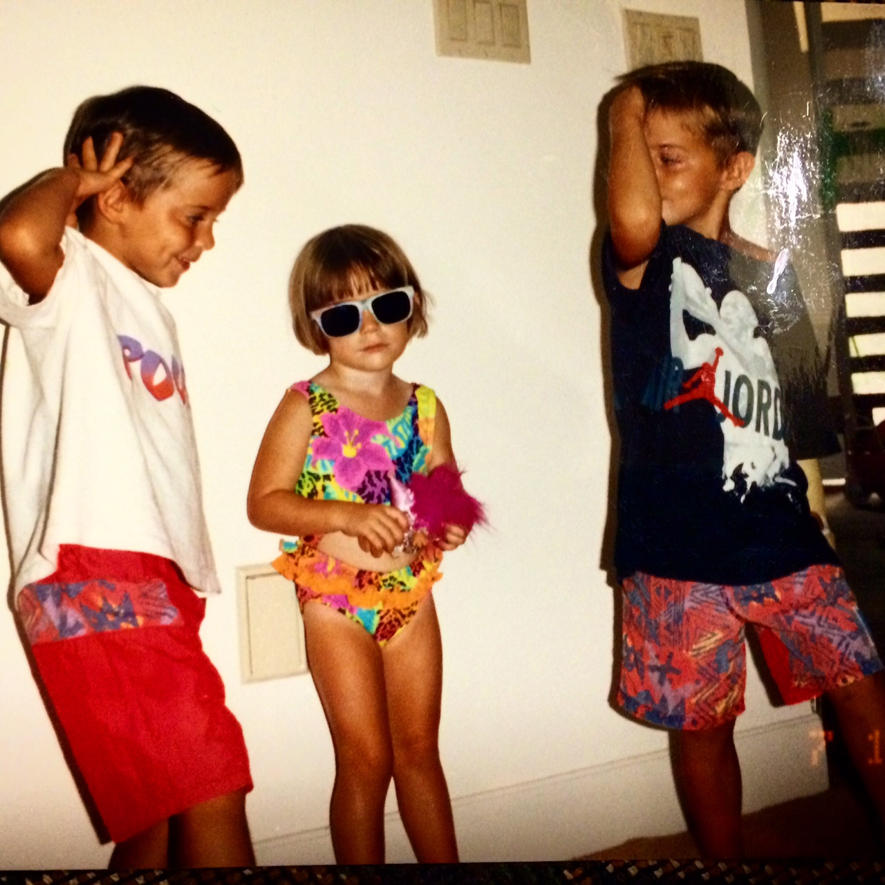

Lindsay Frances Higgins (born July 16, 1989), is a Business analyst at Guardian Life Insurance Company, in New York, NY. She is currently taking a Web Development 100 at New York Code + Design Academy.
Lindsay was born in New York City, NY, the daughter of Frank, who works in finance, and Carol Higgins, a realator. She was raised in New Rochelle, New York, a suburb of New York City.
Lindsay is the youngest of 3 children. She has twin brothers, Owen and Brendan Higgins.
Lindsay went to James Madison University, located in Harrisonburg, Virginia. She graduated in 2011 with a Bachelor of Business Administration in Marketing. While at JMU she was a member of Alpha Kappa Psi and studied abroad in Antwerp, Belgium
Lindsay resides in the Upper East Side of Manhattan with her long time friend Hanah Wade.
This summer she combined her passions for soccer and traveling by vacationing in Rio De Janeiro during the World Cup. Her and her boyfriend were fortunate enough to watch two games in the wold famous Maracana Stadium.